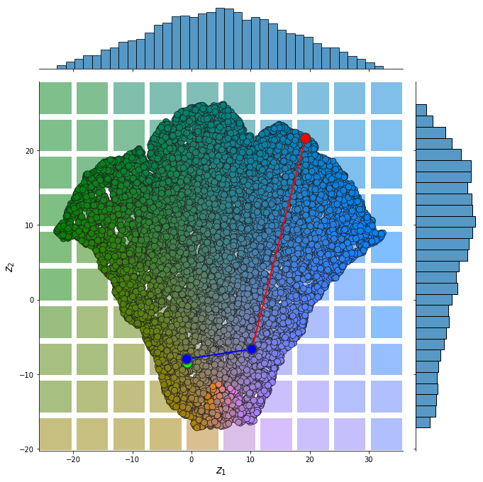
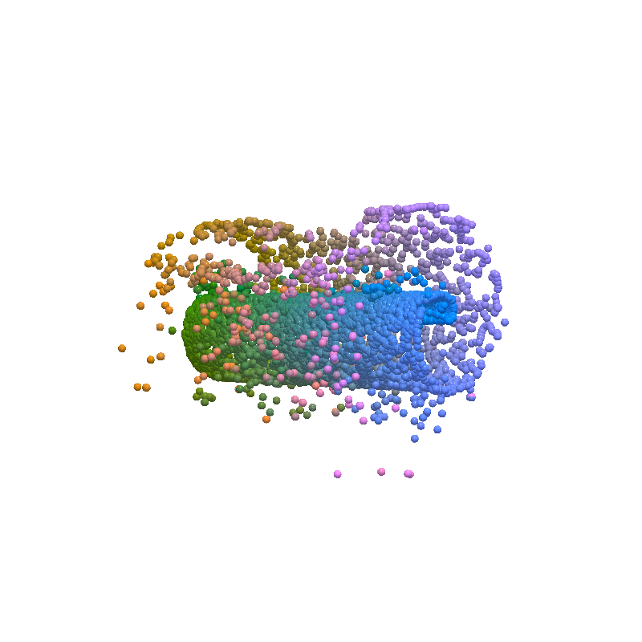
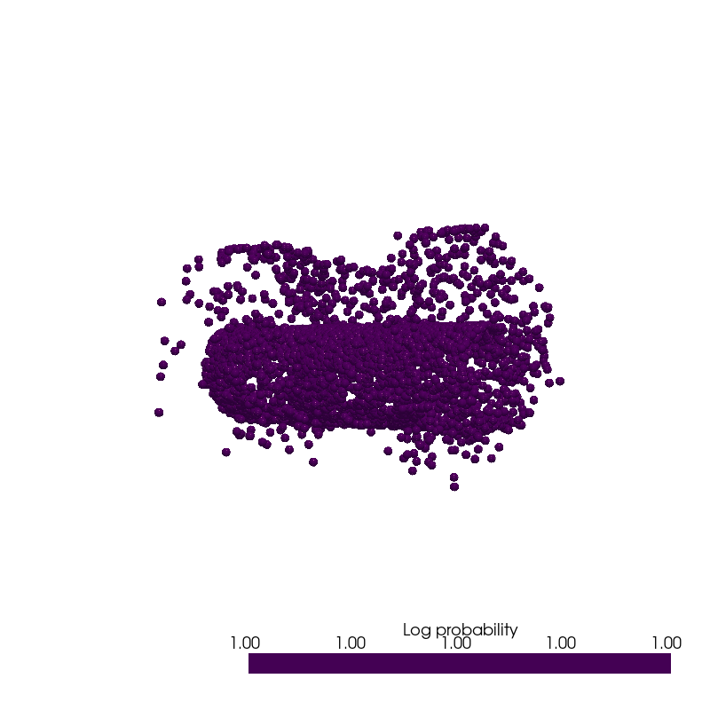
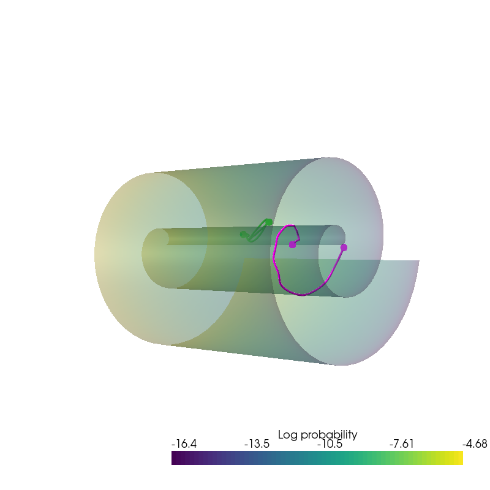

%load_ext autoreload
Uniform Manifold Approximation¶
import os
import umap
import torch
import numpy as np
from pdmtut.core import GenerativeModel
from umap.distances import minkowski_grad
from joblib import dump, load
store_results = True
Introduction¶
Implementation¶
class UMap(GenerativeModel):
def __init__(self):
super().__init__()
#self.model = umap.UMAP(random_state=42, metric=minkowski_grad, metric_kwds={'p':5}, min_dist=0.)
self.model = umap.UMAP(
random_state=42, metric=minkowski_grad,
metric_kwds={'p':5}, min_dist=0.99,
n_components=2, n_neighbors=15
)
@property
def n_components(self):
return self.model.n_components
def fit_model(self, X):
xs = self.model.fit_transform(X)
self.phi_min_max = xs[:,0].min(), xs[:,0].max()
self.theta_min_max = xs[:,1].min(), xs[:,1].max()
def encode(self, X):
return torch.from_numpy(self.model.transform(X))
def decode(self, X):
return torch.from_numpy(self.model.inverse_transform(X))
def save(self, path):
if path is not None:
dump(self, os.path.join(path, 'model.joblib'))
def load(path):
if path is not None:
return load(os.path.join(path, 'model.joblib'))
def save_exists(path):
return os.path.isfile(os.path.join(path, 'model.joblib'))
def log_likelihood(self, X):
# return the log likelihood of each sample
return torch.ones(X.shape[0])
def sample_posterior(self, n_samples):
z_samples = torch.stack([
torch.FloatTensor(n_samples).uniform_(*self.phi_min_max),
torch.FloatTensor(n_samples).uniform_(*self.theta_min_max)
], -1)
return torch.from_numpy(self.model.inverse_transform(z_samples))
def __str__(self):
return 'umap'
Experiment 1a: swiss roll¶
import pyvista as pv
from pdmtut.datasets import SwissRoll
pv.set_plot_theme("document")
if store_results:
result_save_path = '../results/swiss_roll/umap'
pv.set_jupyter_backend('None')
else:
pv.set_jupyter_backend('ipygany')
result_save_path = None
dataset = SwissRoll(n_samples=100**2, seed=11)
if UMap.save_exists(result_save_path):
model = UMap.load(result_save_path)
else:
model = UMap()
model.fit_model(dataset.X)
model.save(result_save_path)
Input Representation¶
from pdmtut.vis import plot_representation
z = model.encode(dataset.X)
z_extremes = model.encode(dataset.y_extremes)
plot_representation(z.numpy(), index_colors=dataset.index_colors, z_extremes=z_extremes, interpolate_background=True, root=result_save_path)

Input Reconstruction¶
from pdmtut.vis import plot_reconstruction
z = model.encode(dataset.X)
x = model.decode(z)
plot_reconstruction(dataset.unnormalise_scale(x).numpy(), dataset.index_colors, root=result_save_path)

Density Estimation¶
from pdmtut.vis import plot_density
log_likelihood = model.log_likelihood(dataset.X)
plot_density(dataset.unnormalise_scale(dataset.X).numpy(), log_likelihood.numpy(), root=result_save_path)

Generate Samples¶
from pdmtut.vis import plot_generated_samples
generated_samples = model.sample_posterior(100**2)
generated_samples_log_likelihood = model.log_likelihood(generated_samples)
plot_generated_samples(dataset.unnormalise_scale(generated_samples).numpy(), generated_samples_log_likelihood.numpy(), root=result_save_path)

Interpolation¶
from pdmtut.vis import plot_interpolation
from scipy.interpolate import interp1d
z_extremes = model.encode(dataset.y_extremes)
uniform_state, uniform_log_prob, _ = dataset.sample_points_uniformly(n_samples=100**2, seed=11)
linfit1 = interp1d([1,20], z_extremes[:2].numpy(), axis=0)
linfit2 = interp1d([1,20], z_extremes[2:].numpy(), axis=0)
interpolated_points_1 = model.decode(torch.Tensor(linfit1(np.arange(1,21))))
interpolated_points_2 = model.decode(torch.Tensor(linfit2(np.arange(1,21))))
plot_interpolation(
dataset.unnormalise_scale(interpolated_points_1).numpy(),
dataset.unnormalise_scale(interpolated_points_2).numpy(),
uniform_state.detach().view(100, 100, 3).permute(2, 0, 1).numpy(),
uniform_log_prob.numpy(), root=result_save_path
)
